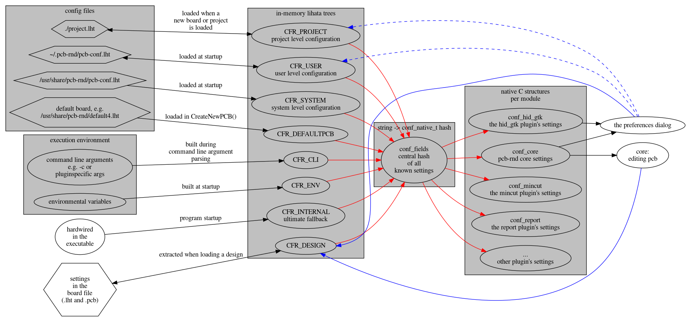

The new config system in pcb-rnd
User documentation
As of 1.1.0, pcb-rnd switched to a lihata based configuration system.
The purpose of this document is to describes the basic system design going into
enough details to provide the user with full control over the configuration.
The other side, how the system is implemented is described in the
programmer's manual and there is also a
checklist to assist plugin programmers.
Architecture: data flows, merging, dispatching
The final configuration is a collection of values for
all known settings, arranged in a tree. The config
tree is a theoretical concept; different representations of the tree are
actually built runtime, in-memory. Pcb-rnd code, plugins and utilities
are constantly reading these in-memory representations to decide how to
carry out their tasks.
Config settings are imported from multiple sources: from different files,
from environment vareiables, from command line arguments, from the .pcb
files on load. Any source can define any part of the config tree.
When the configuration is processed, each source is read into a temporary
tree and then all the temporary trees are merged into the final
config tree. The following diagram demonstrates all configuration
related data flows.

The leftmost column of nodes are the sources. (Note: paths mentioned there are
the default paths, for reference, it is possible to change them compile-time.)
Along the black arrows, from left to right, each source is imported into a
tree representing a role: the role or
purpose of the source. The next
step is following the red arrows in two steps:
- first merge all the role treesinto a flat list; this determines the value of each setting;
- then dispatch the values to the right component of the code.
Some components may change some of the settings run-time. The trivial example
is the GUI (hid_gtk on this diagram) that provides menus and dialog boxes for
the user to change settings. Such a change is always fed back (blue arrow)
to the design role tree directly, from where the new value is again merged
and dispatched along the red arrows. Changes in the design role are saved
with the .pcb file (thus the bidirectional black arrow between the source and
the in-memory tree for the design role). Occassionally the user wants to
save parts of the setting as a project setting or
as an user setting - in this case, along the dashed blue lines, the
corresponding project or user roles are modified. This again results in updating
the hash and the binary representation; these roles also have
bidirectional black arrows and their changes are also saved in the original
source.
Merge details
In the new system it is up to the user to decide what settings are
system-level and what settings are user- or project-level. This is possible
because any source can define any setting. In the merging step (red arrows
between roles and the hash) it may turn out that there are overlaps (multiple
sources defining value for the same setting) or blind spots (no source
sets a given item).
overlaps
Each setting in each source has a prioirty. The
priority can be defined in the source, or if it is not defined, each source
inherits a fallback default priority. The fallback is designed to provide
the intuitive order: cli > design > project > user > system.
When multiple sources are describing a value for the same setting,
priority decides the final value. Most settings are scalar:
a single integer, string or a single "yes/no" or "on/off" value (e.g.
the background color or whether polygons are thin-drawn). For scalars
the rule is simple: the higher priority value wins and all lower priority
values are discarded when putting the values into the hash. More
details: how different roles and priorities
can be used with scalars.
There are some settings that are represented as an array or list of
values. They are described in a lihata list item ("li:") in the config
files and are generally called lists in this document. How lists
are merged is controlled by the merging policy, which can be
in each source, just like the prioirty is set. Check out the
list merging section for more details.
blind spots
At the end the code does need a value for each setting, so in the final
render (after the hash) every setting must have a value. To avoid blind spots,
values not initialized, there is a built-in configuration file, compiled into
the executable. This file is loaded into role CFR_INTERNAL, and has
the lowest priority. This configuration file contains the default value for
all settings.